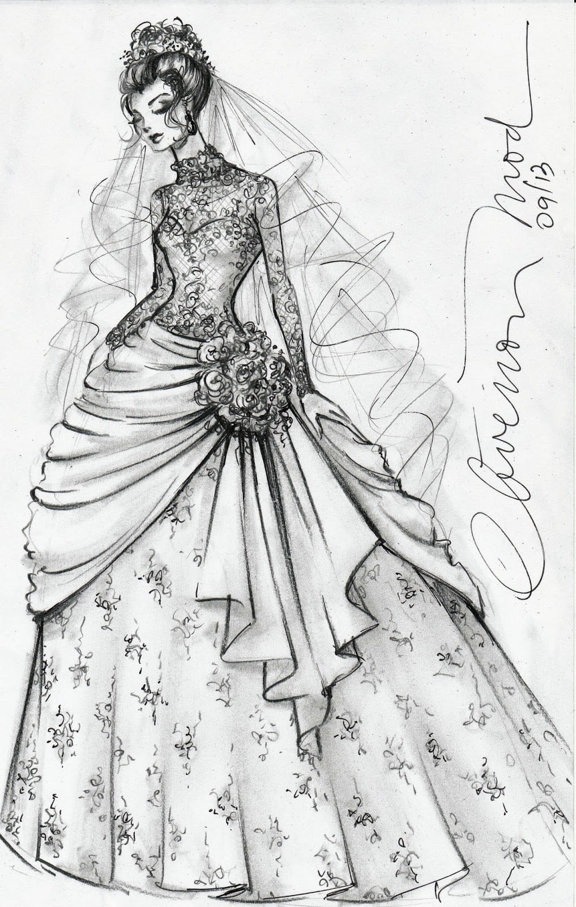
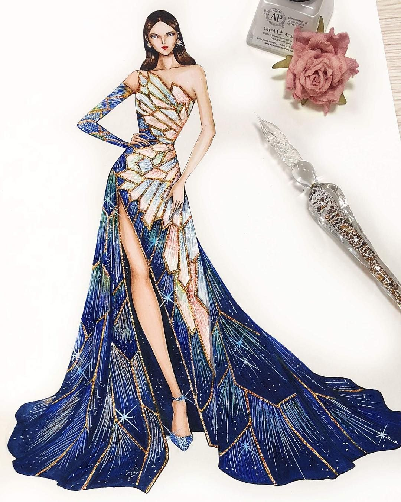
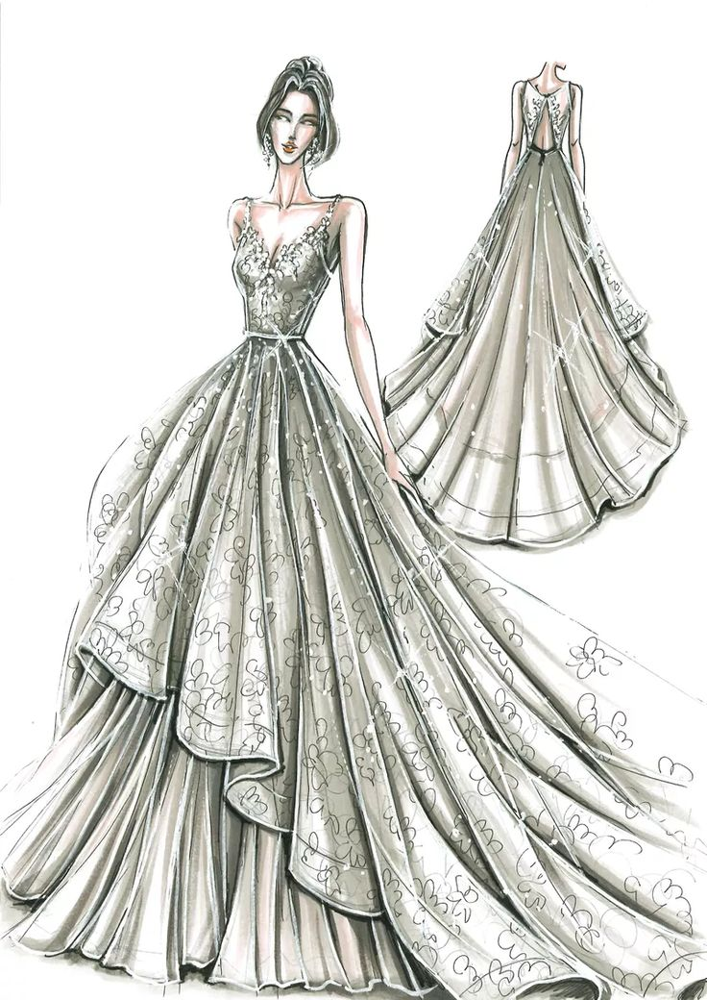
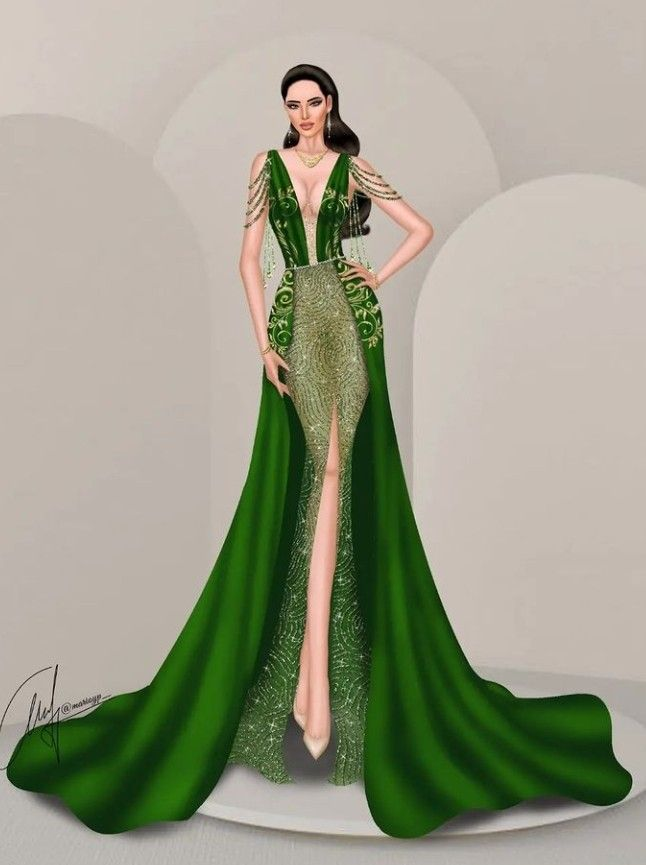
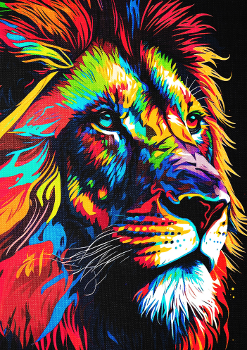
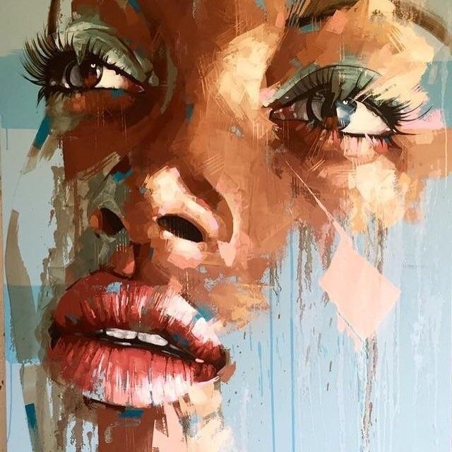

Voila !
Je m'appelle Hadassa, une étudiante curieuse et passionnée, à la croisée de deux mondes : l’informatique et le stylisme. Depuis mon plus jeune âge, j’ai toujours été fascinée par le stylisme et depuis que je decouverte la manière dont la technologie peut résoudre des problèmes complexes, j'ai choisit de combiner le deux , tout en étant attirée par l’élégance, les formes et les couleurs que permet la mode.
Je suis passionnée par la création et la réalisation de projets concrets, je suis une personne curieuse, déterminée et en constante évolution. Mon parcours m’a permis de développer des compétences solides que je continue d’enrichir au fil des expériences. Partout où je vais, j’aime relever de nouveaux défis, apprendre de nouvelles choses et travailler avec sérieux et créativité avec le design, j'aime tous ce qui est en rapport avec les styles, les couleurs,...
   
Grâce à l’informatique, j’explore la logique, la création de sites web, d'applications et
de solutions numériques. Quant au stylisme, il me permet d’exprimer ma créativité et mon sens
du détail à travers des designs personnels. Je suis une personne organisée, créative,
et toujours ouverte à l’apprentissage. Je crois qu'une passion nourrie par le travail et
la curiosité, peut mener loin.
Voici un aperçu de mon parcours scolaire jusqu’à aujourd’hui :
| Années | Ecoles/Universités | Classes/Facultés |
|---|---|---|
| 2012_2013 | Cardinal Monsegwo | 1ère primaire |
| 2013_2014 | Cardinal Monsegwo | 2ème primaire |
| 2014_2015 | Ecole Berée | 3ème primaire |
| 2015_2016 | Ecole Berée | 4ème primaire |
| 2016_2017 | Cardinal Monsegwo | 5ème primaire |
| 2017_2018 | Cardinal Monsegwo | 6ème primaire |
| 2018_2019 | collège Saint raphaél | 1ère secondaire |
| 2019_2020 | Collège Saint raphaél | 2ème secondaire |
| 2020_2021 | Collège saint raphaél | 3ème scientifique |
| 2021_2022 | Collège saint raphaél | 4ème scientifique |
| 2022_2023 | Collège saint raphaél | 5ème scientifique |
| 2023_2024 | Collège saint raphaél | 6ème scientifique |
| 2025_ | UPC | L1 LMD FASI |
euh oui ! j'aimes aussi les melanges des couleurs, certes , je ne sais pas peindre des tableaux des peintures, mais j'aime tous ce qui concerne le design et quand on parle du design, on voit l'art
 Ce portfolio reflète mon engagement, mon évolution et les projets qui me tiennent à cœur. N’hésitez pas à me contacter pour échanger ou collaborer !